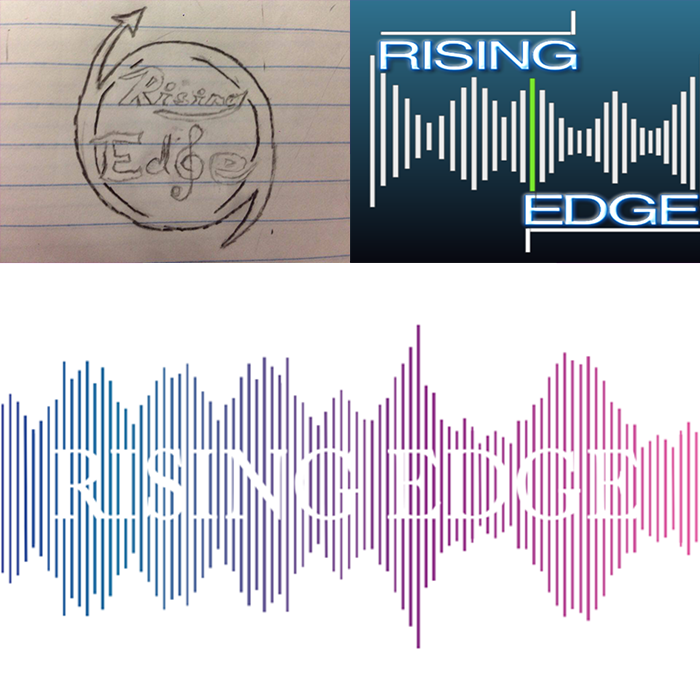
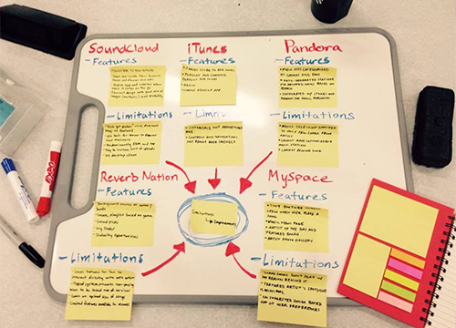
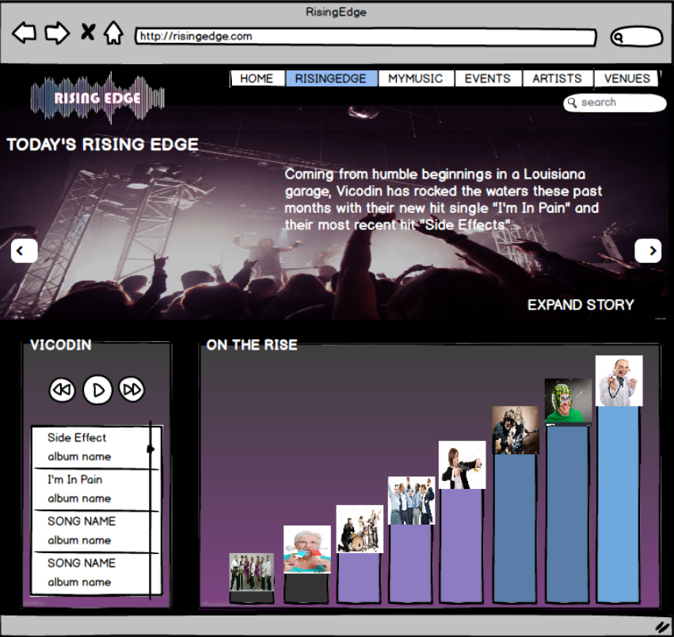
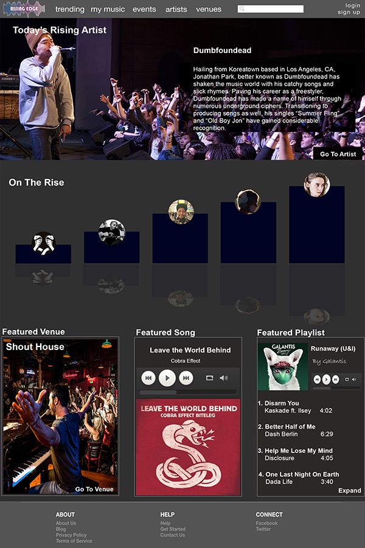

Rising Edge
Team Rising Edge is a group of 6 dedicated engineering UCSD students
set out to design a music website with a goal in mind: improvement.
Our desire for improvement gave birth to an idea that we can make the music world
interact closer with one another. We wanted listeners to be able to connect with
their favorite artists through a multitude of ways such as the option of being able
to request an artist to perform at a venue. Our three main targets are: normal listeners
like me or you, artists/bands, and venues. Together, we aim to connect these three to create
the perfect trifecta of communication in the music world.
Making our Brand
To get the gears rolling, our first objective was to create a logo to brand our
website. Each person in our team produced a sketched rough draft of the logo.
Voting on the three that we liked, we set out to create a more refined
version of the three. At last, we found
finalized our logo design and are ready to tackle the next step.

Analyzing our Competitors
In order to fully understand how to market our website and to rise to the top,
we needed to do some competitive analysis of our main competitors in which we
narrowed down and mapped out their key features and flaws:

Prototyping
After mapping out how our website would ultimately function, we confirmed our
website's goal and set out to planning its content and layout. Using Balsamiq, a prototyping
tool, what each tab on our website would look like. For me, I worked on the Trending Page which
was devoted to seeking out upstart artists and putting them in the spotlight.

The Finished High Fidelity Website
At last as we reached our final stages of discussing and designing
the content strategy of our webpage, we began to garnish the website aesthetically.
Using photoshop, we were able to each create a page for the website and mount it on Invision
to fully see how our website would operate. After reviewing everything and fixing some bugs
here and there, we have our finished high fidelity website.
